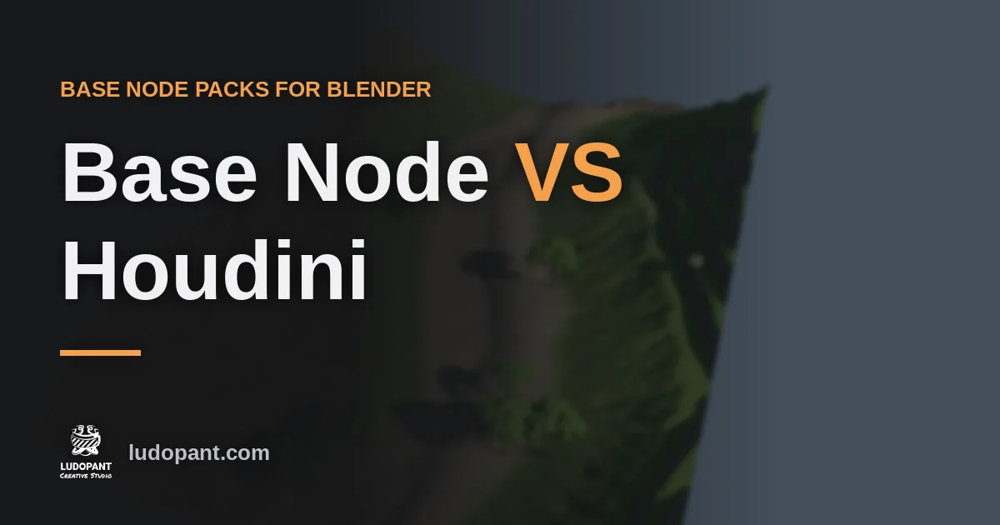

Products › Base Node Packs › VS › Houdini
Base Node VS Houdini

Houdini, by SideFX. A procedural, node-based 3D application. Apprentice is free for non-commercial use; Indie, Core and FX are commercial.[1]
Base Node is a text language for Blender's node trees, with a free add-on and paid packs of tested node groups. Houdini is a separate application built on procedural nodes, with solvers, a render farm manager and engines plug-ins. Base Node brings a part of its geometry toolset to Blender's Geometry Nodes, as .bn text: terrains and erosion, L-systems and fracture in Procedural Toolkit, Labs-style game tools in Game Art Tools, and PolyExtrude and PolyBevel in Modeling Tools.
Of the 12 capabilities below, Base Node covers 8, covers 2 in part and does not cover 2. The Houdini side of each row was checked on SideFX's pages on 2026-11-20; the numbers link to them.
What Houdini does, and how Base Node does it
| What Houdini does | Houdini | Base Node + pack | Status |
|---|---|---|---|
| The network as text | hexpand unpacks a .hip into editable files and hcollapse packs it back. hou.Node.asCode() prints Python that rebuilds a node. Wrangles run VEX.[2,3,4] | A .bn file is the node tree, read and written both ways, formatted, and readable in a diff. | Covered |
| Game tools | SideFX Labs, free, has Trim Texture, Flowmap, Road Generator, LOD Create and Auto UV.[5,6,7,8,9] | Flowmaps, trim sheets, roads laid on a terrain, lightmap UVs, vertex colours baked from fields, and LOD by distance.
| Covered |
| Edge damage and wear | Labs Edge Damage chips the edges of a mesh.[10] | Chips, dents, rivets, stitches, streaks of rust and dust made in the mesh, each stored for a shader to read.
| Covered |
| Terrain and erosion | HeightField Noise, HeightField Erode (hydraulic and thermal), Terrace and Mask by Feature.[11,12] | A heightfield of layered noise on a grid mesh, exact terraces, thermal and hydraulic erosion with water, sediment and flow maps, and a slope mask.
| Covered |
| L-systems | The L-System SOP rewrites strings by rules; brackets start branches.[13] | A bracketed L-system grown in a Repeat zone, with phyllotaxis, length decay, jitter, tropism, tubes and leaves.
| Covered |
| Fracture | Voronoi Fracture splits geometry into cells; RBD Material Fracture fractures by material (concrete, glass, wood).[14] | Voronoi fracture of a closed mesh, one Manifold Boolean per cell, with a gap, shrink and explode. No fracture by material, no constraints.
| Partial |
| PolyExtrude, PolyBevel, Boolean groups | PolyExtrude and PolyBevel edit faces and edges. Boolean outputs groups such as the A-B seam.[15,16] | Insets and extrusions by region, bevels on a profile, corners chamfered, holes filled, a boolean that marks its cut faces and seam, panel lines.
| Covered |
| Scattering | Scatter places points by a density attribute and relaxes them.[17] | Points by density with Poisson-disk spacing, masks by slope, altitude, attributes and distance, layers kept apart.
| Covered |
| Copies on points | Copy to Points copies geometry onto points, set by attributes such as pscale.[18] | Cloners and effectors on top of Blender's Instance on Points.
| Covered |
| 2D signed distance fields | Copernicus has SDF Shape and SDF Blend nodes; VDB from Polygons builds 3D SDF volumes.[19,20] | 2D signed distance fields and their booleans on geometry. No 3D SDF volumes.
| Partial |
| Simulation | FLIP fluids, Pyro, Vellum and MPM solvers.[21,22,23,24] | None. Blender's own physics and simulation zones are separate. | Not covered |
| Procedural rigging | KineFX rigs characters at geometry level; APEX graphs evaluate the rigs.[25] | None. Blender's node systems cannot build an armature. | Not covered |
Where Houdini is ahead
- FLIP fluids, Pyro smoke and fire, Vellum cloth and hair, and an MPM solver for snow and soil.[21,23,24]
- PDG/TOPs splits work into items and runs them on a machine or a farm.[26]
- Houdini Engine runs digital assets with their parameters inside Unreal, Unity, Maya and 3ds Max.[27]
- Solaris builds USD scenes, and Karma renders them.[28]
- KineFX and APEX rig and animate characters procedurally.[25]
- Volumes and VDB for clouds, smoke and SDF modelling.[20]
When to choose which
Choose Houdini when
You need simulations (FLIP, Pyro, Vellum, MPM), PDG to run work on a farm, Houdini Engine in Unreal or Unity, or a pipeline built on USD and Solaris.
Choose Base Node when
You work in Blender and want terrains, trees, fracture, game-level tools and procedural modelling there, as node groups you can read, review and change, with no second application.
The packs
- Procedural ToolkitTerrains, Voronoi fracture and L-system trees in Geometry Nodes.
- Game Art ToolsFlowmaps, trim sheets, roads and engine-ready meshes in Geometry Nodes.
- Modeling ToolsBevels, extrusions, insets and panel lines for Geometry Nodes, every result grouped.
- Smart MaterialsA texture painter's smart materials, live in Geometry Nodes and shaders.
- Scatter & BiomesRule-based scattering and layered biomes for Geometry Nodes.
- Motion GraphicsCloners, effectors and falloffs for motion design in Geometry Nodes.
Sources
- https://www.sidefx.com/products/compare/
- https://www.sidefx.com/docs/houdini/ref/utils/hexpand.html
- https://www.sidefx.com/docs/houdini/hom/hou/OpNode.html
- https://www.sidefx.com/docs/houdini/vex/index.html
- https://www.sidefx.com/docs/houdini/labs/index.html
- https://www.sidefx.com/docs/houdini/nodes/sop/labs--trim_texture.html
- https://www.sidefx.com/docs/houdini/nodes/sop/labs--flowmap-2.0.html
- https://www.sidefx.com/docs/houdini/nodes/sop/labs--road_generator.html
- https://www.sidefx.com/docs/houdini/nodes/sop/labs--lod_create-2.0.html
- https://www.sidefx.com/docs/houdini/nodes/sop/labs--edge_damage-2.1.html
- https://www.sidefx.com/docs/houdini/nodes/sop/heightfield_erode.html
- https://www.sidefx.com/docs/houdini/nodes/sop/heightfield_maskbyfeature.html
- https://www.sidefx.com/docs/houdini/nodes/sop/lsystem.html
- https://www.sidefx.com/docs/houdini/nodes/sop/index.html
- https://www.sidefx.com/docs/houdini/nodes/sop/polybevel.html
- https://www.sidefx.com/docs/houdini/nodes/sop/boolean.html
- https://www.sidefx.com/docs/houdini/nodes/sop/scatter.html
- https://www.sidefx.com/docs/houdini/nodes/sop/copytopoints.html
- https://www.sidefx.com/docs/houdini/nodes/cop/sdfshape.html
- https://www.sidefx.com/docs/houdini/model/volumes.html
- https://www.sidefx.com/docs/houdini/fluid/index.html
- https://www.sidefx.com/docs/houdini/pyro/index.html
- https://www.sidefx.com/docs/houdini/vellum/index.html
- https://www.sidefx.com/docs/houdini/mpm/index.html
- https://www.sidefx.com/docs/houdini/character/kinefx/index.html
- https://www.sidefx.com/docs/houdini/tops/index.html
- https://www.sidefx.com/products/houdini-engine/
- https://www.sidefx.com/docs/houdini/solaris/index.html
Houdini is a trademark of SideFX, or of its owner. Other product names are trademarks of their owners. Ludopant and Base Node are not affiliated with or endorsed by them; the names are used only to compare. All comparisons.